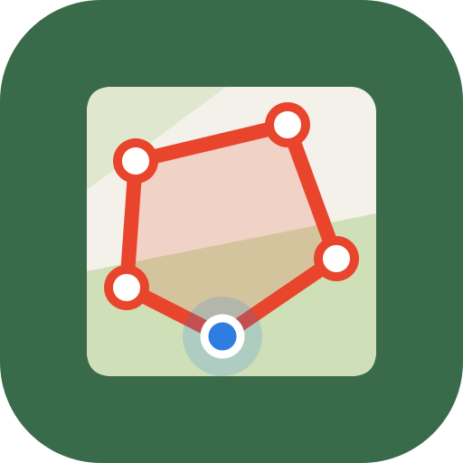

Terra Camp
Política de privadesa
Darrera actualització: 18 de novembre de 2026
Terra Camp és una app per mesurar una parcel·la sobre el terreny amb el GPS del mòbil i comparar-la amb la del Cadastre, a la web i a Android. La fa Mario Escuder Nebot (contacte: labellucoapps@gmail.com). L'app no té comptes d'usuari, ni publicitat, ni estadístiques d'ús, i no envia les teves dades a cap servidor propi, perquè no n'hi ha cap.
La teva ubicació
Per mesurar, l'app fa servir la ubicació precisa del dispositiu (GPS) mentre estàs mesurant: fa la mitjana de diverses lectures a cada vèrtex. A Android, perquè la mesura continuï amb la pantalla apagada, l'app fa servir un servei en primer pla amb una notificació fixa mentre mesura; quan s'acaba la mesura, deixa de rebre la ubicació. La ubicació es fa servir al dispositiu i no s'envia a cap servidor propi. Només si busques la parcel·la «Aquí», l'app envia aquest punt al Cadastre per saber quina parcel·la hi ha. La primera vegada que obres l'app, fa servir la zona horària del dispositiu per triar el país de la vista inicial del mapa, sense enviar-la enlloc.
Què es desa al dispositiu
Les mesures (el nom, la data, els vèrtexs amb les coordenades, l'altitud i l'error estimat, i, si n'hi ha, la parcel·la del Cadastre amb què es compara), els ajustos del promig, l'última vista del mapa, l'idioma, la llista de compres i, si has comprat a la web, la clau de llicència es desen només al teu dispositiu. Ho pots esborrar des de l'app o esborrant les dades de l'app o del lloc web.
Serveis públics que consulta l'app
Per mostrar el mapa, trobar la parcel·la i fer la vista 3D, l'app demana dades directament a serveis públics: el Cadastre espanyol (parcel·les), l'IGN (mapa, ortofotos i model digital del terreny), OpenStreetMap (mapa), EOX (imatges Sentinel-2) i Amazon Web Services (dades d'elevació obertes de tot el món). Aquestes peticions porten la zona que consultes (la del mapa, la referència cadastral o el punt on busques la parcel·la) i, com qualsevol connexió a internet, la teva adreça IP. Cada servei té la seva pròpia política de privadesa. La web es baixa de Cloudflare Pages, i les biblioteques del codi de unpkg.com i cdnjs.cloudflare.com.
Enllaços des de Terra Parcel·les
Terra Parcel·les pot obrir una parcel·la a Terra Camp amb un enllaç que porta la referència cadastral. L'app la llegeix de l'enllaç i la consulta al Cadastre, com si l'haguessis cercada tu; no rep cap altra dada de Terra Parcel·les.
Compres
A l'app d'Android, la compra de la versió Pro la gestiona Google Play. Terra Camp no veu ni desa cap dada de pagament; només rep de Google Play si la compra s'ha fet. A la web, la compra es fa a la pàgina de Polar (polar.sh), que actua com a venedor i tracta el pagament i les dades de facturació (correu, nom, país) amb la seva pròpia política de privadesa. Terra Camp no veu cap dada de pagament: només envia a Polar la clau de llicència que hi enganxes, per activar-la en aquest dispositiu i comprovar-la de tant en tant, i la desa al dispositiu.
Fitxers que exportes i informes PDF
Els fitxers GeoJSON, KML, GPX i CSV i els informes PDF es generen al dispositiu, i tu tries on desar-los o amb qui compartir-los. Porten les coordenades de la mesura.
Infants
L'app no està adreçada a infants i no en recull cap dada.
Canvis
Si aquesta política canvia, es publicarà aquí amb una data nova. Per a qualsevol dubte, escriu a labellucoapps@gmail.com.
Vegeu també les condicions d'ús.
Política de privacidad
Última actualización: 18 de noviembre de 2026
Terra Camp es una app para medir una parcela sobre el terreno con el GPS del móvil y compararla con la del Catastro, en la web y en Android. La hace Mario Escuder Nebot (contacto: labellucoapps@gmail.com). La app no tiene cuentas de usuario, ni publicidad, ni estadísticas de uso, y no envía tus datos a ningún servidor propio, porque no lo hay.
Tu ubicación
Para medir, la app usa la ubicación precisa del dispositivo (GPS) mientras estás midiendo: hace la media de varias lecturas en cada vértice. En Android, para que la medición continúe con la pantalla apagada, la app usa un servicio en primer plano con una notificación fija mientras mide; cuando termina la medición, deja de recibir la ubicación. La ubicación se usa en el dispositivo y no se envía a ningún servidor propio. Solo si buscas la parcela «Aquí», la app envía ese punto al Catastro para saber qué parcela hay. La primera vez que abres la app, usa la zona horaria del dispositivo para elegir el país de la vista inicial del mapa, sin enviarla a ningún sitio.
Qué se guarda en el dispositivo
Las mediciones (el nombre, la fecha, los vértices con las coordenadas, la altitud y el error estimado y, si la hay, la parcela del Catastro con la que se compara), los ajustes del promedio, la última vista del mapa, el idioma, la lista de compras y, si has comprado en la web, la clave de licencia se guardan solo en tu dispositivo. Puedes borrarlo desde la app o borrando los datos de la app o del sitio web.
Servicios públicos que consulta la app
Para mostrar el mapa, encontrar la parcela y hacer la vista 3D, la app pide datos directamente a servicios públicos: el Catastro español (parcelas), el IGN (mapa, ortofotos y modelo digital del terreno), OpenStreetMap (mapa), EOX (imágenes Sentinel-2) y Amazon Web Services (datos de elevación abiertos de todo el mundo). Estas peticiones llevan la zona que consultas (la del mapa, la referencia catastral o el punto donde buscas la parcela) y, como cualquier conexión a internet, tu dirección IP. Cada servicio tiene su propia política de privacidad. La web se descarga de Cloudflare Pages, y las bibliotecas del código de unpkg.com y cdnjs.cloudflare.com.
Enlaces desde Terra Parcel·les
Terra Parcel·les puede abrir una parcela en Terra Camp con un enlace que lleva la referencia catastral. La app la lee del enlace y la consulta al Catastro, como si la hubieras buscado tú; no recibe ningún otro dato de Terra Parcel·les.
Compras
En la app de Android, la compra de la versión Pro la gestiona Google Play. Terra Camp no ve ni guarda ningún dato de pago; solo recibe de Google Play si la compra se ha hecho. En la web, la compra se hace en la página de Polar (polar.sh), que actúa como vendedor y trata el pago y los datos de facturación (correo, nombre, país) con su propia política de privacidad. Terra Camp no ve ningún dato de pago: solo envía a Polar la clave de licencia que pegas, para activarla en este dispositivo y comprobarla de vez en cuando, y la guarda en el dispositivo.
Archivos que exportas e informes PDF
Los archivos GeoJSON, KML, GPX y CSV y los informes PDF se generan en el dispositivo, y tú eliges dónde guardarlos o con quién compartirlos. Llevan las coordenadas de la medición.
Menores
La app no está dirigida a menores y no recoge ningún dato suyo.
Cambios
Si esta política cambia, se publicará aquí con una fecha nueva. Para cualquier duda, escribe a labellucoapps@gmail.com.
Consulta también las condiciones de uso.
Privacy policy
Last updated: 18 November 2026
Terra Camp is an app for measuring a parcel on the ground with your phone's GPS and comparing it with the Cadastre's, on the web and on Android. It is made by Mario Escuder Nebot (contact: labellucoapps@gmail.com). The app has no user accounts, no advertising and no usage analytics, and it does not send your data to any server of its own, because there is none.
Your location
To measure, the app uses the device's precise location (GPS) while you are measuring: it averages several readings at each vertex. On Android, so that measuring continues with the screen off, the app uses a foreground service with a persistent notification while it measures; when the measurement ends, it stops receiving the location. The location is used on the device and is not sent to any server of our own. Only if you look for the parcel “Here” does the app send that point to the Cadastre to find out which parcel is there. The first time you open the app, it uses the device's time zone to choose the country of the initial map view, without sending it anywhere.
What is stored on your device
Your measurements (name, date, vertices with their coordinates, elevation and estimated error and, if any, the Cadastre parcel they are compared with), the averaging settings, the last map view, the language, the list of purchases and, if you bought on the web, the license key are stored only on your device. You can delete all this in the app or by clearing the app's or the website's data.
Public services the app uses
To show the map, find the parcel and build the 3D view, the app requests data directly from public services: the Spanish Cadastre (parcels), IGN (map, aerial photos and digital terrain model), OpenStreetMap (map), EOX (Sentinel-2 imagery) and Amazon Web Services (open elevation data for the whole world). These requests include the area you look up (the map area, the cadastral reference or the point where you look for the parcel) and, like any internet connection, your IP address. Each service has its own privacy policy. The website is served by Cloudflare Pages, and code libraries by unpkg.com and cdnjs.cloudflare.com.
Links from Terra Parcel·les
Terra Parcel·les can open a parcel in Terra Camp with a link that carries the cadastral reference. The app reads it from the link and looks it up in the Cadastre, as if you had searched for it yourself; it receives no other data from Terra Parcel·les.
Purchases
In the Android app, the Pro purchase is handled by Google Play. Terra Camp never sees or stores any payment details; it only learns from Google Play whether the purchase was made. On the web, the purchase is made on Polar's page (polar.sh), which acts as the seller and handles the payment and billing details (email, name, country) under its own privacy policy. Terra Camp never sees any payment details: it only sends Polar the license key you paste, to activate it on this device and check it from time to time, and stores it on the device.
Exported files and PDF reports
GeoJSON, KML, GPX and CSV files and PDF reports are generated on your device, and you choose where to save them or who to share them with. They contain the measurement's coordinates.
Children
The app is not directed at children and does not collect any data from them.
Changes
If this policy changes, the new version will be published here with a new date. For any question, write to labellucoapps@gmail.com.
See also the terms of use.